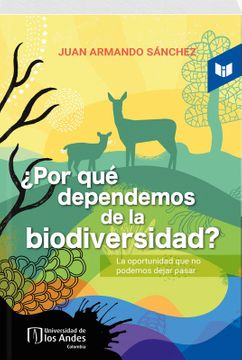

¿Por qué dependemos de la biodiversidad?
Reseña por Jorge I. Zuluaga

Ver detalles · Ver reseña en GoodReads (necesita cuenta)
Así es como me gustaría describir la primera impresión que me dejó la lectura del libro de Juan Armando Sánchez.
El libro está muy bien escrito y ampliamente documentado. Es una verdadera "veta" de datos interesantes y curiosos sobre la biodiversidad, no solo de Colombia, sino también del mundo en general (aunque después de leer el texto me doy cuenta de que ambas cosas son casi lo mismo).
Lo mejor para mí fue descubrir el concepto de lo que llamaré "patrimonio de la biodiversidad". Me da pena confesarlo, pero si el concepto es ampliamente conocido (supongo que lo es; parece obvio que la biodiversidad es una forma de riqueza única), era ajeno para mí. Después de leer el libro de Juan Armando, me doy cuenta de que vivo en un país extremadamente rico, pero dirigido por gobernantes extremadamente pobres.
Afortunadamente, libros como este y lecciones como las que ofrece el profesor Juan Armando pueden ayudar a que nuestros dirigentes salgan de esa pobreza mental en la que están sumidos, seguramente por falta de una mejor educación (aunque hayan estudiado en las mejores universidades).
Como señala el mismo libro, Juan Armando ofrece un curso de Biodiversidad en la Universidad de los Andes en Colombia, universidad que, dicho sea de paso, es una de las pocas donde se gradúan los que serán, con mucha probabilidad, los futuros gobernantes de Colombia. Después de leer "¿Por qué dependemos de la biodiversidad?", creo que si esos futuros gobernantes están viendo el curso de Juan Armando, tal vez hay esperanza. Lo que no hay es tiempo.
El libro de Juan Armando es fácil de leer y no debería haber excusa para no hacerlo. Está escrito con un estilo entre divulgativo y académico que entretiene y, al mismo tiempo, garantiza que lo que estás leyendo está basado en buena ciencia. Sin embargo, debo decir que al principio comienza con un tono informal y muy atractivo, especialmente para el lector casual, pero termina pareciéndose más a un documento académico. Esto no le resta valor, pero puede desanimar. ¡No se desanimen! El libro vale la pena hasta la última página.
De alguna manera me quedé esperando recibir algunas de las emocionantes lecciones que los estudiantes de Juan Armando reciben en su curso sobre biodiversidad. Imagino que con el libro me pasó lo que nos ocurre a casi todos cuando normalmente nos enfrentamos con un "curso" nuevo: el sueño y las promesas del título van dejando paso a una realidad más áspera, una realidad, sin embargo, que debes estar dispuesto a asimilar dejando a un lado las superficiales recompensas dopaminérgicas, para concentrarte en absorber como mejor se puede una catarata de información y nuevos conceptos que sabes son importantes.
El principal defecto del libro para mí es la organización, y esta es la razón por la cual le doy solo 4 estrellas. Para mí, como lector curioso, pero también como divulgador y científico, la estructura del "cuento" representa casi la mitad del valor de una obra divulgativa.
En los primeros capítulos, a pesar de que los títulos prometen una gradualidad en la exposición que va desde la historia del surgimiento de la biosfera hasta la descripción de la grandiosa diversidad de algunos de los más importantes biomas en la Tierra del presente (la selva húmeda tropical, los estuarios, los arrecifes coralinos, etc.), el contenido de los capítulos está un poco "descuadernado". En algunos, me sentí leyendo una colección desconectada de anécdotas y datos (eso sí, ¡datos muy interesantes!) sobre todas esas cosas; datos, sin embargo, que no encajaban completamente en una historia o que no estaban "ensartados" en un hilo conductor reconocible.
Esto, por supuesto, no le resta valor al trabajo de elaboración y compilación de Juan Armando, que repito, es riguroso y bien documentado, pero puede desanimar a quienes, como yo, amamos las historias bien contadas.
Las gráficas insertadas en medio del libro no tienen una leyenda explicativa adecuada y hay que hacer un esfuerzo para entenderlas (algunas incluso son muy académicas). Tampoco en el texto parece existir una explicación sobre ellas, de modo que su valor informativo no es muy grande.
Las fotografías al final, la mayoría tomadas por el autor, ¡son geniales!
Es una lástima que en esta edición no puedan verse muchas de esas fotografías en un formato más grande. Después de verlas, terminé imaginando este libro convertido en un hermoso ejemplar de gran formato, con pasta dura y hojas de papel brillante, profusamente ilustrado y con un contenido científico y académico similar al de esta edición, pero repito, un poco mejor "hilvanado".
No puedo decir cuáles fueron los capítulos que más disfruté, pero definitivamente aquellos dedicados al agua, la microbiota y la zoonosis fueron los que más impacto causaron en mí (tal vez por la cercanía de esos temas con mi propio cuerpo). Aún así, los capítulos finales (los dilemas de la biodiversidad, ¿por qué dependemos de la biodiversidad?), si bien más académicos, fueron para mí los que dejaron el mensaje más claro, que, parafraseando a un famoso comercial de preservativos de los años 90, resumiría en un "¡sin biodiversidad, ni pío!".
En resumidas cuentas, no hay razón para que no salgan ya y busquen en una librería física o en línea el libro de Juan Armando y lo devoren sin demora. Si bien es un "alimento" que debe masticarse con cuidado, el valor nutritivo lo amerita sin duda alguna.